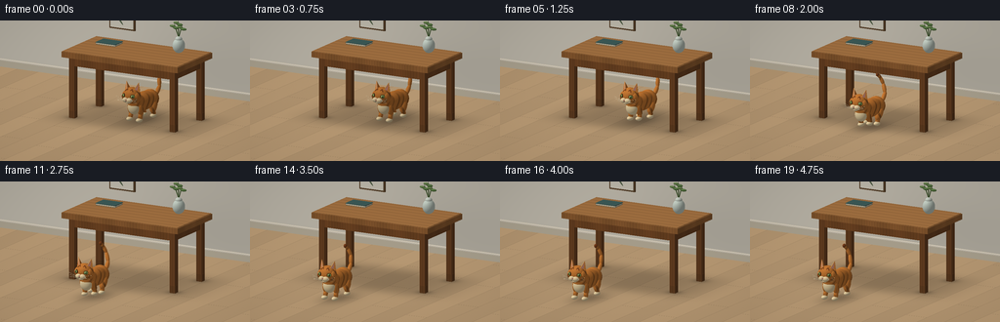
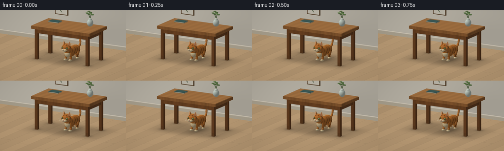

CODING AGENTS AS PIXEL WORLD MODELS
traex/GPT-6.1-Sol · dynamic_spatial_relationship_0017
点击播放 · 原生 RGB 像素
逐轮保存的候选
回放视频、检查图与代码变化。
每份候选均可单独播放。实际图片检查记录在下方工具轨迹中。
候选 01播放与检查图
点击播放 · 原生 RGB 像素


展开代码变化
--- 上一保存版本
+++ 本次保存版本
@@ -0,0 +1,330 @@
+import json, math
+from pathlib import Path
+import numpy as np
+from PIL import Image
+from artifact_io import save
+
+ROOT = Path(__file__).resolve().parent
+SPEC = json.loads((ROOT/'task_spec.json').read_text())
+S=3
+W,H=SPEC['width']*S,SPEC['height']*S
+
+def norm(v):
+ v=np.asarray(v,dtype=float)
+ return v/np.linalg.norm(v,axis=-1,keepdims=True)
+
+EYE=np.array([3.8,2.65,7.2])
+TARGET=np.array([0.,.68,.48])
+F=norm(TARGET-EYE); R=norm(np.cross(F,[0,1,0])); U=np.cross(R,F)
+HEIGHT=2.8
+xx,yy=np.meshgrid((np.arange(W)+.5-W/2)*HEIGHT/H, (H/2-np.arange(H)-.5)*HEIGHT/H)
+ORIG=EYE+xx[...,None]*R+yy[...,None]*U
+DIR=F
+LIGHT=norm([-3,6,4])
+
+class Renderer:
+ def __init__(self):
+ self.depth=np.full((H,W),np.inf)
+ self.rgb=np.zeros((H,W,3),float)
+ def bounds(self, center, radius):
+ d=np.asarray(center)-EYE
+ px=(d@R)*H/HEIGHT+W/2; py=H/2-(d@U)*H/HEIGHT
+ pr=radius*H/HEIGHT+3
+ return max(0,int(px-pr)), max(0,int(py-pr)), min(W,int(px+pr+1)), min(H,int(py+pr+1))
+ def put(self,rect,t,normal,col,ambient=1,texture=None):
+ x0,y0,x1,y1=rect
+ if x1<=x0 or y1<=y0:return
+ old=self.depth[y0:y1,x0:x1]
+ hit=(t>0)&np.isfinite(t)&(t<old)
+ if not np.any(hit):return
+ p=ORIG[y0:y1,x0:x1]+t[...,None]*DIR
+ n=normal
+ if n.ndim==1:n=np.broadcast_to(n,p.shape)
+ color=np.broadcast_to(np.array(col,float),p.shape).copy()
+ if texture is not None:color=texture(p,n,color)
+ nd=np.maximum(0,n@LIGHT)
+ # Broad softbox and warm bounced illumination.
+ shade=(.55+.44*nd)*ambient
+ color=color*shade[...,None]
+ halfway=norm(LIGHT-DIR)
+ spec=np.maximum(0,n@halfway)**35
+ color+=spec[...,None]*5
+ color=np.clip(color,0,255)
+ self.rgb[y0:y1,x0:x1][hit]=color[hit]
+ old[hit]=t[hit]
+ def ell(self,c,r,col,axes=None,texture=None,ambient=1):
+ c=np.asarray(c,float);r=np.asarray(r,float)
+ B=np.eye(3) if axes is None else np.asarray(axes,float)
+ rect=self.bounds(c,max(r));x0,y0,x1,y1=rect
+ if x1<=x0 or y1<=y0:return
+ o=(ORIG[y0:y1,x0:x1]-c)@B/r
+ d=DIR@B/r
+ a=d@d;b=np.sum(o*d,axis=-1);cc=np.sum(o*o,axis=-1)-1
+ disc=b*b-a*cc
+ t=(-b-np.sqrt(np.maximum(0,disc)))/a
+ t=np.where(disc>=0,t,np.inf)
+ local=o+t[...,None]*d
+ n=local/r@B.T
+ n=n/np.maximum(1e-9,np.linalg.norm(n,axis=-1,keepdims=True))
+ self.put(rect,t,n,col,ambient,texture)
+ def capsule(self,a,b,r,col,texture=None,ambient=1):
+ a=np.array(a);b=np.array(b);ax=norm(b-a)
+ v=norm(np.cross(ax,[1,0,0] if abs(ax[0])<.8 else [0,1,0]))
+ w=np.cross(ax,v)
+ # Overlapping tapered ellipsoids produce smooth anatomy and tail curves.
+ self.ell((a+b)/2,[r,np.linalg.norm(b-a)/2+r,r],col,np.column_stack([v,ax,w]),texture,ambient)
+ def box(self,c,size,col,texture=None,ambient=1):
+ c=np.array(c);size=np.array(size);rect=self.bounds(c,np.linalg.norm(size)/2)
+ x0,y0,x1,y1=rect
+ if x1<=x0 or y1<=y0:return
+ o=ORIG[y0:y1,x0:x1]-c
+ a=(-size/2-o)/DIR;b=(size/2-o)/DIR
+ near=np.minimum(a,b);far=np.maximum(a,b)
+ t=np.max(near,axis=-1);end=np.min(far,axis=-1)
+ axis=np.argmax(near,axis=-1)
+ n=np.zeros((*t.shape,3))
+ for k in range(3): n[...,k]=np.where(axis==k,-np.sign(DIR[k]),0)
+ t=np.where(end>=np.maximum(t,0),t,np.inf)
+ self.put(rect,t,n,col,ambient,texture)
+ def tri(self,a,b,c,col,ambient=1):
+ a=np.array(a);b=np.array(b);c=np.array(c)
+ center=(a+b+c)/3
+ rect=self.bounds(center,max(np.linalg.norm(a-center),np.linalg.norm(b-center),np.linalg.norm(c-center)))
+ x0,y0,x1,y1=rect
+ e1=b-a;e2=c-a;pvec=np.cross(DIR,e2);det=e1@pvec
+ if abs(det)<1e-9:return
+ tv=ORIG[y0:y1,x0:x1]-a
+ u=(tv@pvec)/det;q=np.cross(tv,e1)
+ v=q@DIR/det;t=q@e2/det
+ t=np.where((u>=0)&(v>=0)&(u+v<=1),t,np.inf)
+ n=norm(np.cross(e1,e2))
+ if n@DIR>0:n=-n
+ self.put(rect,t,n,col,ambient)
+
+# Subtle continuous wood grain in world coordinates.
+def walnut(p,n,c):
+ grain=np.sin(p[...,0]*100+np.sin(p[...,2]*8)*2.5+np.sin(p[...,0]*9)*1.2)
+ grain+=.45*np.sin(p[...,0]*257+p[...,2]*4)
+ tone=1+.035*grain+.04*np.sin(p[...,0]*11+p[...,2]*2)
+ # Top grain runs along the table's width rather than across it.
+ top=abs(n[...,1])>.5
+ topg=np.sin(p[...,2]*155+2*np.sin(p[...,0]*4)+np.sin(p[...,2]*27))
+ tone=np.where(top,1+.04*topg+.035*np.sin(p[...,2]*32),tone)
+ return c*tone[...,None]
+
+def ground_texture(p,n,c):
+ z=p[...,2];x=p[...,0]
+ plank=np.floor((x+5)/.48)
+ edge=np.minimum((x+5)% .48,.48-(x+5)%.48)
+ seams=np.clip(edge/.006,0,1)
+ end=(z+((plank*1.237)%2.8))%2.8
+ seams*=np.clip(np.minimum(end,2.8-end)/.007,0,1)
+ wave=.025*np.sin(x*158+np.sin(z*2.6)*2)+.012*np.sin(x*410+z*3)
+ tone=.98+.025*np.sin(plank*8.61)+wave
+ c=c*tone[...,None]
+ c*= (.8+.2*seams)[...,None]
+ # Soft contact and broad table shadow.
+ sh=.21*np.exp(-((x-.04)/1.55)**4-((z-.03)/.93)**4)
+ for lx in [-1.15,1.15]:
+ for lz in [-.54,.54]:
+ sh+=.20*np.exp(-((x-lx)/.16)**2-((z-lz)/.15)**2)
+ return c*(1-np.minimum(sh,.6))[...,None]
+
+
+def background():
+ r=Renderer()
+ # Matte cream plaster back wall and pale oak floor.
+ t=-ORIG[...,1]/DIR[1]
+ normal=np.array([0.,1.,0.])
+ r.put((0,0,W,H),t,normal,[205,171,129],texture=ground_texture)
+ tw=(-2.4-ORIG[...,2])/DIR[2]
+ def walltex(p,n,c):
+ bright=.98+.04*np.exp(-((p[...,0]+1.8)/2)**2-((p[...,1]-1.5)/2)**2)
+ c=c*bright[...,None]
+ # Soft wall shadow under the table.
+ sh=.07*np.exp(-((p[...,0]-.15)/1.8)**2-((p[...,1]-.5)/.8)**2)
+ return c*(1-sh[...,None])
+ r.put((0,0,W,H),tw,np.array([0,0,1]),[231,224,208],texture=walltex)
+ r.box([0,.075,-2.35],[12,.15,.075],[212,201,178])
+ r.box([0,.152,-2.30],[12,.023,.045],[238,228,209])
+ # A quiet, minimal framed botanical print, far from the cat's motion path.
+ r.box([-1.62,1.5,-2.29],[.58,.75,.04],[103,76,48],texture=walnut)
+ r.box([-1.62,1.5,-2.264],[.52,.69,.017],[238,232,215])
+ for i in range(4):
+ r.capsule([-1.6,1.24+i*.10,-2.25],[-1.72+(i%2)*.18,1.39+i*.095,-2.247],.015,[113,130,99])
+ return r
+
+def table(r):
+ # Broad walnut tabletop with softly rounded edge profile.
+ for x in [-1.15,1.15]:
+ for z in [-.54,.54]:
+ r.box([x,.61,z],[.12,1.22,.12],[113,70,37],texture=walnut)
+ r.box([x,.075,z],[.126,.15,.126],[104,66,35],texture=walnut)
+ # Aprons make the under-table relationship unmistakable.
+ r.box([0,1.16,.55],[2.37,.18,.075],[123,76,39],texture=walnut)
+ r.box([0,1.16,-.55],[2.37,.18,.075],[123,76,39],texture=walnut)
+ for x in [-1.15,1.15]:r.box([x,1.16,0],[.07,.18,1.13],[117,73,39],texture=walnut)
+ r.box([0,1.31,0],[2.66,.115,1.40],[150,98,52],texture=walnut)
+ r.box([0,1.373,0],[2.62,.016,1.36],[174,121,70],texture=walnut)
+ # Small closed book and glazed vase on the back corner.
+ r.box([-.79,1.394,-.28],[.43,.034,.30],[222,207,177])
+ r.box([-.79,1.416,-.28],[.45,.012,.32],[65,98,95])
+ r.box([-.79,1.378,-.28],[.45,.01,.32],[54,80,79])
+ r.ell([.76,1.52,-.35],[.125,.15,.125],[201,212,201])
+ r.ell([.76,1.655,-.35],[.07,.054,.07],[205,213,201])
+ r.ell([.76,1.687,-.35],[.053,.006,.053],[68,78,60])
+ for i in range(3):
+ a=[.76,1.68,-.35];b=[.74+(i-1)*.09,1.94+(.08 if i==1 else 0),-.37+i*.01]
+ r.capsule(a,b,.009,[79,106,59])
+ r.ell([b[0]+.035,b[1]-.07,b[2]],[.07,.027,.034],[96,129,73])
+ r.ell([b[0]-.045,b[1]-.04,b[2]],[.061,.025,.029],[110,140,82])
+
+ORANGE=np.array([208,126,53]);CREAM=np.array([242,218,170]);DARK=np.array([133,71,33])
+
+def cat(r,frame):
+ # Pause beneath the table, quick run forward, then settle in the foreground.
+ if frame<=4: travel=0.; run=0.
+ elif frame<=13:
+ q=(frame-4)/9
+ travel=q*q*(3-2*q)
+ run=math.sin(math.pi*q)**.6
+ else: travel=1.;run=0.
+ pos=np.array([.13-.28*travel,0,.02+1.76*travel])
+ # Slightly turned profile exposes the muzzle, flank and four legs.
+ angle=-.10+.10*travel
+ fw=np.array([math.sin(angle),0,math.cos(angle)])
+ side=np.array([math.cos(angle),0,-math.sin(angle)])
+ up=np.array([0,1,0]);B=np.column_stack([side,up,fw])
+ phase=(frame-4)*2.15
+ bounce=run*(.035+.033*math.sin(phase*2))
+ def P(x,y,z):return pos+side*x+up*y+fw*z
+ def fur(p,n,c):
+ local=(p-pos)@B
+ x=local[...,0];y=local[...,1];z=local[...,2]
+ # Tiger stripes wrap the flank with irregular, organic edges.
+ stripes=np.cos(z*39+1.5*np.sin(y*16)+.5*np.sin(x*23))
+ stripe=np.clip((stripes-.49)*3.3,0,1)
+ flank=np.clip((np.abs(x)-.045)*7,0,1)
+ c*= (1-.34*stripe[...,None]*flank[...,None])
+ fine=np.sin(x*620+np.sin(y*135)+z*15)*np.sin(z*470+y*7)
+ c*= (1+.023*fine[...,None])
+ return c
+ def ell(x,y,z,rad,color=ORANGE,tex=True,axes=B):
+ r.ell(P(x,y,z),rad,color,axes,fur if tex else None,ambient=.98 if travel else .89)
+ def cap(a,b,rad,color=ORANGE,tex=True):
+ r.capsule(P(*a),P(*b),rad,color,fur if tex else None,.98 if travel else .89)
+ # Tail behind the haunches: a gently raised, flexible ginger curve.
+ sway=.035*math.sin(frame*.5)
+ tail=[(0,.39+bounce,-.35),(-.01,.43+bounce,-.52),(-.04,.55+bounce,-.66),(-.10+sway,.71+bounce,-.73),(-.16+sway,.84+bounce,-.71),(-.18+sway,.91+bounce,-.64)]
+ for i in range(len(tail)-1):
+ cap(tail[i],tail[i+1],.046-i*.003,ORANGE)
+ ell(tail[-1][0],tail[-1][1],tail[-1][2],[.033,.04,.036],DARK,False)
+ # Far legs first; all four feet have a distinct stride and articulated knees.
+ legs=[]
+ for sx in [-1,1]:
+ for front in [False,True]:
+ z=.24 if front else -.25
+ x=sx*.117
+ cyc=phase+(0 if front else math.pi)+(.95 if sx<0 else 0)
+ step=run*.165*math.cos(cyc)
+ lift=run*.085*max(0,math.sin(cyc))
+ hip=(x,.34+bounce,z)
+ knee=(x,.19+bounce*.45,z+step*.45-(.035 if front else -.045))
+ foot=(x,.064+lift,z+step)
+ legs.append((sx,front,hip,knee,foot))
+ def drawleg(leg):
+ sx,front,hip,knee,foot=leg
+ cap(hip,knee,.063 if front else .078)
+ cap(knee,foot,.046)
+ ell(foot[0],foot[1]-.006,foot[2]+.023,[.060,.043,.080],CREAM,False)
+ # Toe grooves on each white paw.
+ for off in [-.017,.017]:cap((foot[0]+off,foot[1]-.002,foot[2]+.065),(foot[0]+off,foot[1]+.012,foot[2]+.074),.0035,[172,141,100],False)
+ for l in legs:
+ if l[0]<0:drawleg(l)
+ ell(0,.38+bounce,-.055,[.177,.190,.355])
+ ell(0,.38+bounce,-.27,[.185,.189,.18])
+ ell(0,.405+bounce,.21,[.159,.182,.17])
+ # Pale chest and belly distinguish the legs from the torso.
+ ell(0,.31+bounce,.285,[.131,.14,.096],CREAM,False)
+ for l in legs:
+ if l[0]>0:drawleg(l)
+ hy=.568+bounce
+ hz=.345
+ ell(0,hy,hz,[.182,.174,.164])
+ ell(.132,hy-.02,hz+.024,[.075,.114,.093])
+ ell(-.132,hy-.02,hz+.024,[.075,.114,.093])
+ # Triangular ears, with modeled rear faces and inset warm-pink ear interiors.
+ for sx in [-1,1]:
+ a=P(sx*.065,hy+.10,hz+.065);b=P(sx*.183,hy+.09,hz-.016);tip=P(sx*.150,hy+.282,hz-.021)
+ back=P(sx*.117,hy+.125,hz-.102)
+ r.tri(a,b,tip,[218,136,64]);r.tri(b,back,tip,[173,94,37]);r.tri(back,a,tip,[199,113,47])
+ ia=P(sx*.091,hy+.133,hz+.049);ib=P(sx*.159,hy+.127,hz-.008);it=P(sx*.143,hy+.242,hz-.010)
+ r.tri(ia,ib,it,[218,148,131])
+ cap((sx*.072,hy+.10,hz+.06),(sx*.143,hy+.27,hz-.02),.009,[236,169,98],False)
+ # Fine dark forehead markings: iconic tabby M and cheek bars.
+ for sx in [-1,1]:
+ cap((sx*.026,hy+.111,hz+.113),(sx*.052,hy+.148,hz+.074),.011,DARK,False)
+ cap((sx*.052,hy+.148,hz+.074),(sx*.092,hy+.107,hz+.104),.010,DARK,False)
+ for j in range(2):
+ cap((sx*.16,hy-.012-j*.039,hz+.061),(sx*.145,hy-.022-j*.039,hz+.102),.010,DARK,False)
+ # Eyes lie on the forward-facing sloping cheek planes.
+ for sx in [-1,1]:
+ # Oriented oval eyes face outward and forwards.
+ normal=norm(side*sx*.57+fw*.82)
+ horizontal=norm(np.cross(up,normal));eyeB=np.column_stack([horizontal,up,normal])
+ c=P(sx*.105,hy+.022,hz+.131)
+ r.ell(c,[.047,.040,.023],[83,57,32],eyeB)
+ c=c+normal*.011
+ r.ell(c,[.038,.032,.016],[151,183,95],eyeB)
+ r.ell(c+normal*.014,[.009,.028,.006],[26,33,22],eyeB)
+ r.ell(c+normal*.019+up*.012-horizontal*.01,[.009,.008,.005],[252,249,222],eyeB)
+ # Upper lid for a natural alert expression.
+ ell(-.047,hy-.062,hz+.162,[.065,.05,.05],CREAM,False)
+ ell(.047,hy-.062,hz+.162,[.065,.05,.05],CREAM,False)
+ ell(0,hy-.106,hz+.145,[.058,.034,.043],CREAM,False)
+ # Inverted pink nose and tiny dark philtrum.
+ r.tri(P(-.026,hy-.039,hz+.207),P(.026,hy-.039,hz+.207),P(0,hy-.060,hz+.218),[158,88,77])
+ cap((0,hy-.059,hz+.210),(0,hy-.083,hz+.209),.003,[87,55,40],False)
+ for sx in [-1,1]:
+ cap((0,hy-.083,hz+.209),(sx*.035,hy-.084,hz+.195),.003,[87,55,40],False)
+ for j in range(3):
+ ell(sx*(.040+.013*(j%2)),hy-.056-j*.014,hz+.204,[.003,.003,.003],[112,79,48],False)
+ # Delicate cream whiskers, visible but not oversized.
+ start=(sx*.073,hy-.060-j*.017,hz+.188)
+ mid=(sx*.167,hy-.053+(1-j)*.025,hz+.195)
+ end=(sx*(.265-j*.014),hy-.050+(1-j)*.043,hz+.171)
+ cap(start,mid,.0023,[244,231,196],False);cap(mid,end,.0018,[244,231,196],False)
+ return pos,travel
+
+
+def make():
+ static=background();table(static)
+ frames=[]
+ for i in range(SPEC['frames']):
+ r=Renderer();r.depth=static.depth.copy();r.rgb=static.rgb.copy()
+ if i<=4:q=0
+ elif i<=13:
+ u=(i-4)/9;q=u*u*(3-2*u)
+ else:q=1
+ # Dynamic soft shadow on the floor, before the cat is composited.
+ z=.02+1.76*q;x=.13-.28*q
+ tf=-ORIG[...,1]/DIR[1]
+ p=ORIG+tf[...,None]*DIR
+ floor=(np.abs(r.depth-tf)<.0001)
+ shadow=.26*np.exp(-((p[...,0]-x-.04)/.29)**2-((p[...,2]-z+.025)/.48)**2)
+ r.rgb[floor]*=(1-shadow[floor,None])
+ cat(r,i)
+ # Very subtle edge vignette gives the natural miniature room a finished look.
+ vignette=1-.035*((xx/(HEIGHT*W/H/2))**2+(yy/(HEIGHT/2))**2)
+ img=np.clip(r.rgb*vignette[...,None],0,255).astype(np.uint8)
+ img=Image.fromarray(img).resize((SPEC['width'],SPEC['height']),Image.Resampling.LANCZOS)
+ frames.append(np.asarray(img))
+ print(f'Frame {i+1}/{SPEC["frames"]}',flush=True)
+ frames=np.stack(frames)
+ save(frames,ROOT)
+ print('Saved RGB video artifacts.',flush=True)
+
+if __name__=='__main__':
+ import warnings
+ warnings.filterwarnings('ignore',category=RuntimeWarning)
+ make()
可观测工具轨迹
实际执行的命令与返回图片。
命令 1exit 0
/bin/bash -lc 'ls -la && cat prompt.txt && cat GENERATION_RULES.md && cat task_spec.json'
命令 2exit 0
/bin/bash -lc "cat artifact_io.py && python - <<'PY' import importlib.util for x in ['numpy','PIL','scipy']: print(x, bool(importlib.util.find_spec(x))) PY"
命令 3exit 0
/bin/bash -lc "mkdir -p .tmp && cat > generate.py <<'PY'
import json, math
from pathlib import Path
import numpy as np
from PIL import Image
from artifact_io import save
ROOT = Path(__file__).resolve().parent
SPEC = json.loads((ROOT/'task_spec.json').read_text())
S=3
W,H=SPEC['width']*S,SPEC['height']*S
def norm(v):
v=np.asarray(v,dtype=float)
return v/np.linalg.norm(v,axis=-1,keepdims=True)
EYE=np.array([3.8,2.65,7.2])
TARGET=np.array([0.,.68,.48])
F=norm(TARGET-EYE); R=norm(np.cross(F,[0,1,0])); U=np.cross(R,F)
HEIGHT=2.8
xx,yy=np.meshgrid((np.arange(W)+.5-W/2)*HEIGHT/H, (H/2-np.arange(H)-.5)*HEIGHT/H)
ORIG=EYE+xx[...,None]*R+yy[...,None]*U
DIR=F
LIGHT=norm([-3,6,4])
class Renderer:
def __init__(self):
self.depth=np.full((H,W),np.inf)
self.rgb=np.zeros((H,W,3),float)
def bounds(self, center, radius):
d=np.asarray(center)-EYE
px=(d@R)*H/HEIGHT+W/2; py=H/2-(d@U)*H/HEIGHT
pr=radius*H/HEIGHT+3
return max(0,int(px-pr)), max(0,int(py-pr)), min(W,int(px+pr+1)), min(H,int(py+pr+1))
def put(self,rect,t,normal,col,ambient=1,texture=None):
x0,y0,x1,y1=rect
if x1<=x0 or y1<=y0:return
old=self.depth[y0:y1,x0:x1]
hit=(t>0)&np.isfinite(t)&(t<old)
if not np.any(hit):return
p=ORIG[y0:y1,x0:x1]+t[...,None]*DIR
n=normal
if n.ndim==1:n=np.broadcast_to(n,p.shape)
color=np.broadcast_to(np.array(col,float),p.shape).copy()
if texture is not None:color=texture(p,n,color)
nd=np.maximum(0,n@LIGHT)
# Broad softbox and warm bounced illumination.
shade=(.55+.44*nd)*ambient
color=color*shade[...,None]
halfway=norm(LIGHT-DIR)
spec=np.maximum(0,n@halfway)**35
color+=spec[...,None]*5
color=np.clip(color,0,255)
self.rgb[y0:y1,x0:x1][hit]=color[hit]
old[hit]=t[hit]
def ell(self,c,r,col,axes=None,texture=None,ambient=1):
c=np.asarray(c,float);r=np.asarray(r,float)
B=np.eye(3) if axes is None else np.asarray(axes,float)
rect=self.bounds(c,max(r));x0,y0,x1,y1=rect
if x1<=x0 or y1<=y0:return
o=(ORIG[y0:y1,x0:x1]-c)@B/r
d=DIR@B/r
a=d@d;b=np.sum(o*d,axis=-1);cc=np.sum(o*o,axis=-1)-1
disc=b*b-a*cc
t=(-b-np.sqrt(np.maximum(0,disc)))/a
t=np.where(disc>=0,t,np.inf)
local=o+t[...,None]*d
n=local/r@B.T
n=n/np.maximum(1e-9,np.linalg.norm(n,axis=-1,keepdims=True))
self.put(rect,t,n,col,ambient,texture)
def capsule(self,a,b,r,col,texture=None,ambient=1):
a=np.array(a);b=np.array(b);ax=norm(b-a)
v=norm(np.cross(ax,[1,0,0] if abs(ax[0])<.8 else [0,1,0]))
w=np.cross(ax,v)
# Overlapping tapered ellipsoids produce smooth anatomy and tail curves.
self.ell((a+b)/2,[r,np.linalg.norm(b-a)/2+r,r],col,np.column_stack([v,ax,w]),texture,ambient)
def box(self,c,size,col,texture=None,ambient=1):
c=np.array(c);size=np.array(size);rect=self.bounds(c,np.linalg.norm(size)/2)
x0,y0,x1,y1=rect
if x1<=x0 or y1<=y0:return
o=ORIG[y0:y1,x0:x1]-c
a=(-size/2-o)/DIR;b=(size/2-o)/DIR
near=np.minimum(a,b);far=np.maximum(a,b)
t=np.max(near,axis=-1);end=np.min(far,axis=-1)
axis=np.argmax(near,axis=-1)
n=np.zeros((*t.shape,3))
for k in range(3): n[...,k]=np.where(axis==k,-np.sign(DIR[k]),0)
t=np.where(end>=np.maximum(t,0),t,np.inf)
self.put(rect,t,n,col,ambient,texture)
def tri(self,a,b,c,col,ambient=1):
a=np.array(a);b=np.array(b);c=np.array(c)
center=(a+b+c)/3
rect=self.bounds(center,max(np.linalg.norm(a-center),np.linalg.norm(b-center),np.linalg.norm(c-center)))
x0,y0,x1,y1=rect
e1=b-a;e2=c-a;pvec=np.cross(DIR,e2);det=e1@pvec
if abs(det)<1e-9:return
tv=ORIG[y0:y1,x0:x1]-a
u=(tv@pvec)/det;q=np.cross(tv,e1)
v=q@DIR/det;t=q@e2/det
t=np.where((u>=0)&(v>=0)&(u+v<=1),t,np.inf)
n=norm(np.cross(e1,e2))
if n@DIR>0:n=-n
self.put(rect,t,n,col,ambient)
# Subtle continuous wood grain in world coordinates.
def walnut(p,n,c):
grain=np.sin(p[...,0]*100+np.sin(p[...,2]*8)*2.5+np.sin(p[...,0]*9)*1.2)
grain+=.45*np.sin(p[...,0]*257+p[...,2]*4)
tone=1+.035*grain+.04*np.sin(p[...,0]*11+p[...,2]*2)
# Top grain runs along the table's width rather than across it.
top=abs(n[...,1])>.5
topg=np.sin(p[...,2]*155+2*np.sin(p[...,0]*4)+np.sin(p[...,2]*27))
tone=np.where(top,1+.04*topg+.035*np.sin(p[...,2]*32),tone)
return c*tone[...,None]
def ground_texture(p,n,c):
z=p[...,2];x=p[...,0]
plank=np.floor((x+5)/.48)
edge=np.minimum((x+5)% .48,.48-(x+5)%.48)
seams=np.clip(edge/.006,0,1)
end=(z+((plank*1.237)%2.8))%2.8
seams*=np.clip(np.minimum(end,2.8-end)/.007,0,1)
wave=.025*np.sin(x*158+np.sin(z*2.6)*2)+.012*np.sin(x*410+z*3)
tone=.98+.025*np.sin(plank*8.61)+wave
c=c*tone[...,None]
c*= (.8+.2*seams)[...,None]
# Soft contact and broad table shadow.
sh=.21*np.exp(-((x-.04)/1.55)**4-((z-.03)/.93)**4)
for lx in [-1.15,1.15]:
for lz in [-.54,.54]:
sh+=.20*np.exp(-((x-lx)/.16)**2-((z-lz)/.15)**2)
return c*(1-np.minimum(sh,.6))[...,None]
def background():
r=Renderer()
# Matte cream plaster back wall and pale oak floor.
t=-ORIG[...,1]/DIR[1]
normal=np.array([0.,1.,0.])
r.put((0,0,W,H),t,normal,[205,171,129],texture=ground_texture)
tw=(-2.4-ORIG[...,2])/DIR[2]
def walltex(p,n,c):
bright=.98+.04*np.exp(-((p[...,0]+1.8)/2)**2-((p[...,1]-1.5)/2)**2)
c=c*bright[...,None]
# Soft wall shadow under the table.
sh=.07*np.exp(-((p[...,0]-.15)/1.8)**2-((p[...,1]-.5)/.8)**2)
return c*(1-sh[...,None])
r.put((0,0,W,H),tw,np.array([0,0,1]),[231,224,208],texture=walltex)
r.box([0,.075,-2.35],[12,.15,.075],[212,201,178])
r.box([0,.152,-2.30],[12,.023,.045],[238,228,209])
# A quiet, minimal framed botanical print, far from the cat's motion path.
r.box([-1.62,1.5,-2.29],[.58,.75,.04],[103,76,48],texture=walnut)
r.box([-1.62,1.5,-2.264],[.52,.69,.017],[238,232,215])
for i in range(4):
r.capsule([-1.6,1.24+i*.10,-2.25],[-1.72+(i%2)*.18,1.39+i*.095,-2.247],.015,[113,130,99])
return r
def table(r):
# Broad walnut tabletop with softly rounded edge profile.
for x in [-1.15,1.15]:
for z in [-.54,.54]:
r.box([x,.61,z],[.12,1.22,.12],[113,70,37],texture=walnut)
r.box([x,.075,z],[.126,.15,.126],[104,66,35],texture=walnut)
# Aprons make the under-table relationship unmistakable.
r.box([0,1.16,.55],[2.37,.18,.075],[123,76,39],texture=walnut)
r.box([0,1.16,-.55],[2.37,.18,.075],[123,76,39],texture=walnut)
for x in [-1.15,1.15]:r.box([x,1.16,0],[.07,.18,1.13],[117,73,39],texture=walnut)
r.box([0,1.31,0],[2.66,.115,1.40],[150,98,52],texture=walnut)
r.box([0,1.373,0],[2.62,.016,1.36],[174,121,70],texture=walnut)
# Small closed book and glazed vase on the back corner.
r.box([-.79,1.394,-.28],[.43,.034,.30],[222,207,177])
r.box([-.79,1.416,-.28],[.45,.012,.32],[65,98,95])
r.box([-.79,1.378,-.28],[.45,.01,.32],[54,80,79])
r.ell([.76,1.52,-.35],[.125,.15,.125],[201,212,201])
r.ell([.76,1.655,-.35],[.07,.054,.07],[205,213,201])
r.ell([.76,1.687,-.35],[.053,.006,.053],[68,78,60])
for i in range(3):
a=[.76,1.68,-.35];b=[.74+(i-1)*.09,1.94+(.08 if i==1 else 0),-.37+i*.01]
r.capsule(a,b,.009,[79,106,59])
r.ell([b[0]+.035,b[1]-.07,b[2]],[.07,.027,.034],[96,129,73])
r.ell([b[0]-.045,b[1]-.04,b[2]],[.061,.025,.029],[110,140,82])
ORANGE=np.array([208,126,53]);CREAM=np.array([242,218,170]);DARK=np.array([133,71,33])
def cat(r,frame):
# Pause beneath the table, quick run forward, then settle in the foreground.
if frame<=4: travel=0.; run=0.
elif frame<=13:
q=(frame-4)/9
travel=q*q*(3-2*q)
run=math.sin(math.pi*q)**.6
else: travel=1.;run=0.
pos=np.array([.13-.28*travel,0,.02+1.76*travel])
# Slightly turned profile exposes the muzzle, flank and four legs.
angle=-.10+.10*travel
fw=np.array([math.sin(angle),0,math.cos(angle)])
side=np.array([math.cos(angle),0,-math.sin(angle)])
up=np.array([0,1,0]);B=np.column_stack([side,up,fw])
phase=(frame-4)*2.15
bounce=run*(.035+.033*math.sin(phase*2))
def P(x,y,z):return pos+side*x+up*y+fw*z
def fur(p,n,c):
local=(p-pos)@B
x=local[...,0];y=local[...,1];z=local[...,2]
# Tiger stripes wrap the flank with irregular, organic edges.
stripes=np.cos(z*39+1.5*np.sin(y*16)+.5*np.sin(x*23))
stripe=np.clip((stripes-.49)*3.3,0,1)
flank=np.clip((np.abs(x)-.045)*7,0,1)
c*= (1-.34*stripe[...,None]*flank[...,None])
fine=np.sin(x*620+np.sin(y*135)+z*15)*np.sin(z*470+y*7)
c*= (1+.023*fine[...,None])
return c
def ell(x,y,z,rad,color=ORANGE,tex=True,axes=B):
r.ell(P(x,y,z),rad,color,axes,fur if tex else None,ambient=.98 if travel else .89)
def cap(a,b,rad,color=ORANGE,tex=True):
r.capsule(P(*a),P(*b),rad,color,fur if tex else None,.98 if travel else .89)
# Tail behind the haunches: a gently raised, flexible ginger curve.
sway=.035*math.sin(frame*.5)
tail=[(0,.39+bounce,-.35),(-.01,.43+bounce,-.52),(-.04,.55+bounce,-.66),(-.10+sway,.71+bounce,-.73),(-.16+sway,.84+bounce,-.71),(-.18+sway,.91+bounce,-.64)]
for i in range(len(tail)-1):
cap(tail[i],tail[i+1],.046-i*.003,ORANGE)
ell(tail[-1][0],tail[-1][1],tail[-1][2],[.033,.04,.036],DARK,False)
# Far legs first; all four feet have a distinct stride and articulated knees.
legs=[]
for sx in [-1,1]:
for front in [False,True]:
z=.24 if front else -.25
x=sx*.117
cyc=phase+(0 if front else math.pi)+(.95 if sx<0 else 0)
step=run*.165*math.cos(cyc)
lift=run*.085*max(0,math.sin(cyc))
hip=(x,.34+bounce,z)
knee=(x,.19+bounce*.45,z+step*.45-(.035 if front else -.045))
foot=(x,.064+lift,z+step)
legs.append((sx,front,hip,knee,foot))
def drawleg(leg):
sx,front,hip,knee,foot=leg
cap(hip,knee,.063 if front else .078)
cap(knee,foot,.046)
ell(foot[0],foot[1]-.006,foot[2]+.023,[.060,.043,.080],CREAM,False)
# Toe grooves on each white paw.
for off in [-.017,.017]:cap((foot[0]+off,foot[1]-.002,foot[2]+.065),(foot[0]+off,foot[1]+.012,foot[2]+.074),.0035,[172,141,100],False)
for l in legs:
if l[0]<0:drawleg(l)
ell(0,.38+bounce,-.055,[.177,.190,.355])
ell(0,.38+bounce,-.27,[.185,.189,.18])
ell(0,.405+bounce,.21,[.159,.182,.17])
# Pale chest and belly distinguish the legs from the torso.
ell(0,.31+bounce,.285,[.131,.14,.096],CREAM,False)
for l in legs:
if l[0]>0:drawleg(l)
hy=.568+bounce
hz=.345
ell(0,hy,hz,[.182,.174,.164])
ell(.132,hy-.02,hz+.024,[.075,.114,.093])
ell(-.132,hy-.02,hz+.024,[.075,.114,.093])
# Triangular ears, with modeled rear faces and inset warm-pink ear interiors.
for sx in [-1,1]:
a=P(sx*.065,hy+.10,hz+.065);b=P(sx*.183,hy+.09,hz-.016);tip=P(sx*.150,hy+.282,hz-.021)
back=P(sx*.117,hy+.125,hz-.102)
r.tri(a,b,tip,[218,136,64]);r.tri(b,back,tip,[173,94,37]);r.tri(back,a,tip,[199,113,47])
ia=P(sx*.091,hy+.133,hz+.049);ib=P(sx*.159,hy+.127,hz-.008);it=P(sx*.143,hy+.242,hz-.010)
r.tri(ia,ib,it,[218,148,131])
cap((sx*.072,hy+.10,hz+.06),(sx*.143,hy+.27,hz-.02),.009,[236,169,98],False)
# Fine dark forehead markings: iconic tabby M and cheek bars.
for sx in [-1,1]:
cap((sx*.026,hy+.111,hz+.113),(sx*.052,hy+.148,hz+.074),.011,DARK,False)
cap((sx*.052,hy+.148,hz+.074),(sx*.092,hy+.107,hz+.104),.010,DARK,False)
for j in range(2):
cap((sx*.16,hy-.012-j*.039,hz+.061),(sx*.145,hy-.022-j*.039,hz+.102),.010,DARK,False)
# Eyes lie on the forward-facing sloping cheek planes.
for sx in [-1,1]:
# Oriented oval eyes face outward and forwards.
normal=norm(side*sx*.57+fw*.82)
horizontal=norm(np.cross(up,normal));eyeB=np.column_stack([horizontal,up,normal])
c=P(sx*.105,hy+.022,hz+.131)
r.ell(c,[.047,.040,.023],[83,57,32],eyeB)
c=c+normal*.011
r.ell(c,[.038,.032,.016],[151,183,95],eyeB)
r.ell(c+normal*.014,[.009,.028,.006],[26,33,22],eyeB)
r.ell(c+normal*.019+up*.012-horizontal*.01,[.009,.008,.005],[252,249,222],eyeB)
# Upper lid for a natural alert expression.
ell(-.047,hy-.062,hz+.162,[.065,.05,.05],CREAM,False)
ell(.047,hy-.062,hz+.162,[.065,.05,.05],CREAM,False)
ell(0,hy-.106,hz+.145,[.058,.034,.043],CREAM,False)
# Inverted pink nose and tiny dark philtrum.
r.tri(P(-.026,hy-.039,hz+.207),P(.026,hy-.039,hz+.207),P(0,hy-.060,hz+.218),[158,88,77])
cap((0,hy-.059,hz+.210),(0,hy-.083,hz+.209),.003,[87,55,40],False)
for sx in [-1,1]:
cap((0,hy-.083,hz+.209),(sx*.035,hy-.084,hz+.195),.003,[87,55,40],False)
for j in range(3):
ell(sx*(.040+.013*(j%2)),hy-.056-j*.014,hz+.204,[.003,.003,.003],[112,79,48],False)
# Delicate cream whiskers, visible but not oversized.
start=(sx*.073,hy-.060-j*.017,hz+.188)
mid=(sx*.167,hy-.053+(1-j)*.025,hz+.195)
end=(sx*(.265-j*.014),hy-.050+(1-j)*.043,hz+.171)
cap(start,mid,.0023,[244,231,196],False);cap(mid,end,.0018,[244,231,196],False)
return pos,travel
def make():
static=background();table(static)
frames=[]
for i in range(SPEC['frames']):
r=Renderer();r.depth=static.depth.copy();r.rgb=static.rgb.copy()
if i<=4:q=0
elif i<=13:
u=(i-4)/9;q=u*u*(3-2*u)
else:q=1
# Dynamic soft shadow on the floor, before the cat is composited.
z=.02+1.76*q;x=.13-.28*q
tf=-ORIG[...,1]/DIR[1]
p=ORIG+tf[...,None]*DIR
floor=(np.abs(r.depth-tf)<.0001)
shadow=.26*np.exp(-((p[...,0]-x-.04)/.29)**2-((p[...,2]-z+.025)/.48)**2)
r.rgb[floor]*=(1-shadow[floor,None])
cat(r,i)
# Very subtle edge vignette gives the natural miniature room a finished look.
vignette=1-.035*((xx/(HEIGHT*W/H/2))**2+(yy/(HEIGHT/2))**2)
img=np.clip(r.rgb*vignette[...,None],0,255).astype(np.uint8)
img=Image.fromarray(img).resize((SPEC['width'],SPEC['height']),Image.Resampling.LANCZOS)
frames.append(np.asarray(img))
print(f'Frame {i+1}/{SPEC[\"frames\"]}',flush=True)
frames=np.stack(frames)
save(frames,ROOT)
print('Saved RGB video artifacts.',flush=True)
if __name__=='__main__':
import warnings
warnings.filterwarnings('ignore',category=RuntimeWarning)
make()
PY
OPENBLAS_NUM_THREADS=1 python generate.py"命令 4exit 0
/bin/bash -lc "OPENBLAS_NUM_THREADS=1 python - <<'PY'
import generate as g
import numpy as np
for name,p in [('table left',[-1.33,1.38,.7]),('table right',[1.33,1.38,.7]),('table back',[-1.33,1.38,-.7]),('cat initial head',[.13,.8,.35]),('cat final head',[-.15,.8,2.1]),('final foot',[-.15,0,2.05])]:
d=np.array(p)-g.EYE
print(name, 'pixel',128+(d@g.R)*144/g.HEIGHT,72-(d@g.U)*144/g.HEIGHT)
PY"命令 5exit 0
/bin/bash -lc "python - <<'PY'
from pathlib import Path
import numpy as np
from PIL import Image
p=Path('.')
a=np.load('pixels.npz')['pixels']
fs=sorted((p/'frames').glob('*.png'))
print('Packed RGB shape:',a.shape)
print('Frames:',len(fs),'size:',Image.open(fs[0]).size,'mode:',Image.open(fs[0]).mode)
print('Distinct frames:',len({a[:,:,i].tobytes() for i in range(a.shape[-1])}))
for f in ['generate.py','pixels.npz','index.html','inspection.png','transition_check.png']:
print(f,(p/f).stat().st_size,'bytes')
PY"保存候选 1 份；完成命令 5 次；可验证图片返回 0 张。原始 API 响应与完整日志保留在本地。